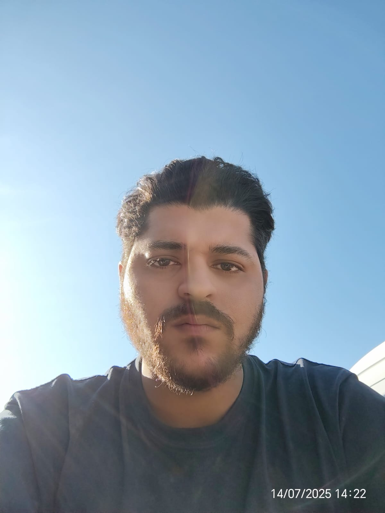

¿Quien soy?
Para comenzar, tengo varios intereses y experiencias. Me apasiona todo lo que tiene que ver con la tecnología, sea de hardware como software. También me encanta lo relacionado al arte y las matemáticas, por lo que mi idea principal es poder estudiar Ingeniería.
Quizá la gente no se imagine que tiene que ver lo anteriormente relacionado entre si, pero esa forma de poder imaginar, analizar, entender, crear y mejorar cosas que tenemos hoy en día es la base de la Ingeniería como tal, por lo que tanto el conocimiento en el arte como el conocimiento técnico en matemática y tecnología en general, nos puede llegar a abrir un punto de vista diferente capaz de darnos una posibilidad de mejora o avance en algún punto del futuro.
Por eso y otras razones decidí estudiar en JaP, ya que además de adentrarme a conocer este mundo de las IT, lo cual es muy útil a la hora de intentar ingresar en el mundo de la Ingenría en Mecatrónica. Además del gusto e interés que tengo en la programación, esta misma me podría dar la posibilidad de trabajar en algo mástranquilo y darme el tiempo necesario para poder estudiar una ingeniería mientras me sustento económicamente y gano experiencia dentro del mundo tecnológino.
¿Qué he aprendido?
Estudios formales
- Bachillerato opción Artístico - Liceo N°1 Eugenio Capdevielle
- Bachillerato opción Ingeniería - Liceo N°1 Eugenio Capdevielle
- Ingeniería en Mecatrónica - UTEC ITR Sur Oeste (Sin concluir)
Cursos
- Habilidades Digitales para la Empleabilidad - INEFOP
- Instalación de Isopaneles - INEFOP
- Jóvenes a Programar - Plan Ceibal (En curso)
Aprendido por experiencia propia (Autodidacta)
- Albañilería
- Sanitaria
- Soldadura
- Electricidad
- Inglés
- Portugués
Habilidades e intereses personales
Me considero una persona con una gran capacidad de aprendizaje, lo que me permite adaptarme rápidamente a nuevas situaciones y adquirir nuevos conocimientos. Además, tengo un gran interés por la tecnología y la programación, lo que me motiva a seguir aprendiendo y mejorando mis habilidades en este campo. Afortunadamente adquirí buenas bases de habiliades blandas debido a mis experiencias laborales previas. Tengo un carácter fuerte y un liderazgo nato, por lo que además de tratar de guiar un equipo de manera eficiente, soy capaz de analizar opiniones y sugerencias del equipo, por lo que trato de mantener cierta cercanía y confianza con todo el equipo.
En cuanto a mis intereses personales, disfruto de actividades al aire libre, disfruto hacer deporte, disfruto jugar videojuegos con amigos, ya sean en coop o en línea en competitivo, tengo gusto por la música y el dibujo.